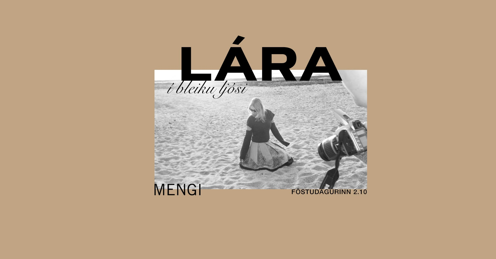
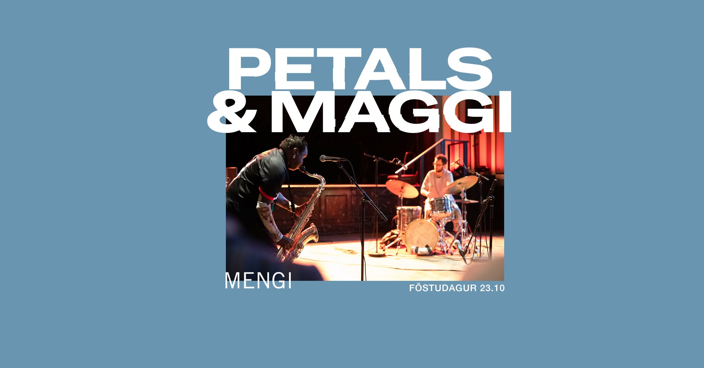

Upcoming Events

THU 24.09 petals, Sólrún Mjöll, Birgir Steinn
Tickets Thursday, September 24th petals, Sólrún Mjöll, & Birgir Steinn doors 19:30 / show 20:00 2500kr / 2000kr students / pay what u can petals - reeds, flutes, violin, piano, small percussion Sólrún Mjöll - drum kit Birgir Steinn Theodórsonn - double bass, tuba

FRI 25.09 Þórir Georg / Einakróna
Tickets Friday, September 25th ÞÓRIR GEORG EINAKRÓNA doors 19:30 / show 20:00 2500kr / 2000kr students / pay what u can On September 12th Þórir Georg releases his album “Cheer up” via Reykjavík Record Shop. To celebrate the occasion Reykjavík´s indie-folk collective Einakróna will join him for a release show at legendary downtown venue Mengi on September 25th. What began as Björk Magnúsdóttir’s solo pseudonym has grown into a five-piece Icelandic indie folk band with a deeper and more ambitious sound. Their debut album Rembihnútar explores loss, change and impossible relationships, all while embracing the joy of making deeply personal music. The band draws inspiration from indie folk music and the lyrics are poetic and personal. https://einakrona.bandcamp.com/ Þórir Georg is a veteran of Icelandic underground, extreme and experimental music. In the last 25 years or so he has pushed his exploration of song and sound further and wider than most would consider sensible. Having made a habit of eschewing all notions of success and careerism in favor of artistic satisfaction he remains lurking in the shadows of the underground. On his new album “Cheer up” Þórir mixes the influences of 60s psychedelic pop with the experimental lo-fi scene of the 90s to create his own brand of experimental pop music that might appeal to fans of such artists as Harry Nilsson, Daniel Johnston, Stephen Malkmus or Syd Barrett. For the show Þórir will supplement his distinct guitar playing and voice with various gadgets and pre-recorded phantom bands to perform a selection of songs from the new album as well as digging through his extensive back catalog. https://thorirgeorg.bandcamp.com/ einakrona.bandcamp.com

SAT 26.09 Engler/McCowen/Óskarsdóttir/Gunnarsson
Tickets Saturday, September 26th MUSIC FOR PERCUSSION, CLARINETS, BLÖCKFLUTES, HARPSICHORD, MANDOLIN, GUITAR, BIRDCALLS, ETC. doors 19:30 / show 20:00 2500kr / 2000kr students / pay what u can MATTHIAS ENGLER: PERCUSSION JOHN McCOWEN: CLARINETS/BLÖCKFLUTES GUÐRÚN ÓSKARSDÓTTIR: HARPSICHORD GUÐMUNDUR STEINN GUNNARSSON: MANDOLIN, GUITARS, BIRDCALLS, ETC.

OCT 02.10 lára - í bleiku ljósi ALBUM RELEASE
Tickets Friday, October 2nd LÁRA: Í BLEIKU LJÓSI ALBUM RELEASE CONCERT doors 19:30 / show 20:00 2500kr / 2000kr students / pay what u can lára is an Icelandic musician, composer and producer working mostly in electronic music. She has been making music from a young age, beginning with classical piano studies and is currently studying electronic music and songwriting at the Reykjavík College of Music. lára is drawn to sound exploration, collecting unusual sounds, manipulating audio recordings and creating diverse sonic landscapes. í bleiku ljósi is lára’s debut solo album. Prior, she released the single þekki ekki, which received great reviews within Iceland’s electronic music scene, including being named “Best Icelandic Song of the Year 2025” by the radio program Straumur (DJ Óli Dóri). The album includes 12 tracks that have been written and produced by lára over the past two years. All songs were recorded and mixed by lára, with mastering by Curver Thoroddsen. ————————— lára er íslensk tónlistarkona sem semur og pródúserar raftónlist. Hún hefur verið á kafi í tónlist frá unga aldri, hóf nám í klassískum píanóleik og stundar nú nám í raftónlist og lagasmíðum við Menntaskólann í Tónlist. lára vinnur með mismunandi hljóð og skapar fjölbreyttan og marglaga hljóðheim. í bleiku ljósi er fyrsta sólóplata láru. Áður gaf hún úr smáskífuna þekki ekki, sem hlaut góðar viðtökur innan íslensku raftónlistarsenunnar. Lagið var meðal annars valið „besta íslenska lag ársins 2025“ af útvarpsþættinum Straumi á X-inu 977, í umsjón Óla Dóra. Platan inniheldur 12 lög sem lára hefur samið og pródúserað undanfarin tvö ár. Hún sá jafnframt um allar upptökur og hljóðblöndun, en Curver Thoroddsen sá um masteringu.
SAT 10.10 Zosha Warpeha / Skúli Sverrisson & John McCowen
Tickets Saturday, October 10th ZOSHA WARPEHA (US) + SKÚLI SVERRISSON & JOHN McCOWEN doors 19:30 / show 20:00 3000kr / 2500kr students / pay what u can ZOSHA WARPEHA is a Brooklyn-based composer-performer working in a meditative space at the intersection of contemporary improvisation and folk traditions. Using bowed stringed instruments alongside her own voice, her long-form compositions explore transformations of time, tonality, and resonant space. She performs primarily on Hardanger d’amore, a sympathetic-stringed instrument closely related to the Norwegian Hardanger fiddle. While her work is informed by the cyclical forms and physical momentum of Nordic folk music, her solo practice "subverts tradition not as a political act, but as a point of departure" (Peter Margasak, Nowhere Street). Warpeha’s debut solo album, silver dawn, was released on Relative Pitch Records in 2024. Orbweaver, a duo collaboration with Mariel Terán, was released on Outside Time in 2025 to critical acclaim, described by The Wire as “simultaneously centered on intimacy and deeply imaginative sound building, delivering a kind of improvisation that, in spite of its experimental edge, feels decidedly human.” Her second solo album, I grow accustomed to the dark, will be released on Outside Time in March 2026. Notable performances have taken place at ISSUE Project Room, Lampo, Emanuel Vigeland Museum, Frequency Festival, Newport Jazz Festival, Vesterheim Museum, The Stone, Detroit Institute of Arts, Greenwood Cemetery Catacombs, and Duluth-stämman Nordic Music Festival. Warpeha has collaborated with artists including Bill Frisell, Eyvind Kang, Shahzad Ismaily, Henry Birdsey, Leila Bordreuil, Elori Saxl, Kaïa Kater, Anne Hytta, and Unni Løvlid. Ongoing creative projects include duos with percussionist Carlo Costa, bassist Tristan Kasten-Krause, and instrument-builder Webb Crawford, as well as a string trio with improvisers Biliana Voutchkova and Isidora Edwards. She has been an artist in residence at ISSUE Project Room and the Anderson Center, and her work has also been supported by the US-Norway Fulbright Foundation, Jerome Foundation, and the Minnesota Arts and Cultural Heritage Fund. She holds degrees in Nordic folk music and jazz & contemporary music from the Norwegian Academy of Music in Oslo and The New School in New York. LINKS Website: www.zoshawarpeha.com Bandcamp: www.zosha.bandcamp.com Instagram: @zoshazosha / www.instagram.com/zoshazosha SKÚLI SVERRISSON has built a unique international career as a composer, instrumentalist, and creative collaborator with a very broad spectrum of international artists. Skúli was active in the downtown music scene of New York, where he collaborated with Ben Monder, Pachora, among others. During this period, he recorded and toured worldwide with the legendary guitarist Alan Holdsworth and was a member of Ryuichi Sakamoto’s band. Skúli worked closely with artist Laurie Anderson for over a decade as a creative collaborator, performer, and producer. He was the music director of Life on a String, which won Anderson a Grammy for the best-sounding record of the year. Skúli has played with free jazz legends such as Wadada Leo Smith and Derek Bailey, performed with revolutionaries like Lou Reed, Jon Hassell, David Sylvian, and Arto Lindsay, and collaborated with new music composers and performers such as Anthony Burr, Sidsel Endresen, and Bára Gísladóttir. JOHN McCOWEN's musical life has become an obsession with discovering a polyphonic language on a historically monophonic instrument - the clarinet. This has led him to a unique acoustic vocabulary that is similar to a shifting soundscape of electronic feedback. John's multiphonic approach is based in drones, difference tones, and beating harmonics as a means to showcase the compositional potential within a single, acoustic sound source. His work has been described by The New Yorker (Steve Smith) as “the sonic equivalent of microscopic life viewed on a slide” and “an astonishing demonstration of pure sound and human will” by The Wire (Phil Freeman). John has collaborated extensively with the composer and instrumentalist, Roscoe Mitchell. He has orchestrated, arranged, and transcribed Mitchell’s works for orchestras and other ensembles as well as performing as a duo of bass saxophone and contrabass clarinet. He has released albums with International Anthem, Edition Wandelweiser, Black Truffle, GRM/Shelter Press, Hallow Ground, and others. He has collaborated with artists such as Roscoe Mitchell, Arto Lindsay, Skúli Sverrisson, Lucy Railton, Weston Olencki, Marja Ahti, and others. John has been artist-in-residence at Headlands Center for the Arts (Sausalito, CA-2024), ISSUE Project Room (Brooklyn, NY-2020), & Lijiang Studio (Yunnan, China-2017,2019). He currently resides in Reykjavík, Iceland where he teaches Music Improvisation at the Iceland University of the Arts and is the artistic director of the experimental arts space, Mengi.

FRI 23.10 petals & Magnús Trygvason Elíassen
Tickets Friday, October 23rd PETALS & MAGNÚS TRYGVASON ELÍASSEN doors 19:30 / show 20:00 2500kr / 2000kr students / pay what u can petals : flutes, shakuhachi, bass clarinet, b-flat clarinet, piano, tenor saxophone, bells, small percussion Magnús Trygvason Eliassen : drums, percussion petals & magnús invite you to listen to two sets of their new duo project frímínútur, icelandic for recess or playtime where they try to recreate the musics of the playground. https://peterokalule.bandcamp.com/album/fr-m-n-tur tree whistles you over, one who mutters plus minus in leaf margin’s stealth is already there, s-n-e-m-m-a for the skipping time, chime, chase elastic circles braceletting afterthought of double-that, flick-of-the tryst the side-grove secreting the line. burr bells, spells away in the canopy beholds all the turning points in the game w/o reporting back, takk fyrir for that berried half of dangling legged snarl. a clue, rope waved below ligules of grass to unseek this this, sometimes, sometimes ~ Katy Lewis Hood